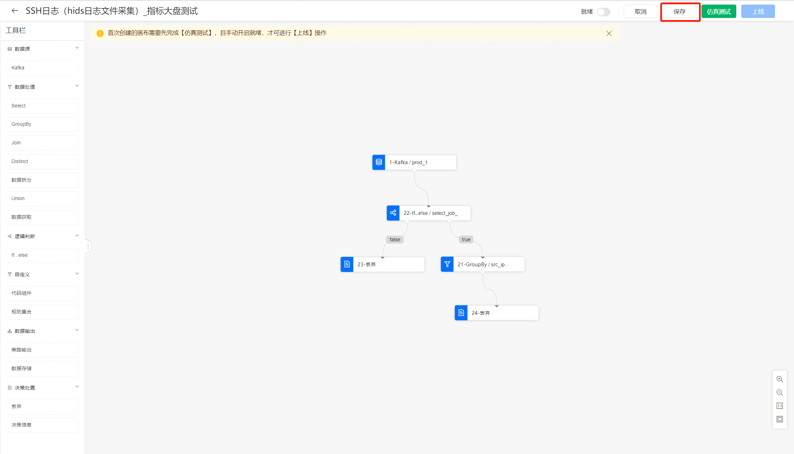
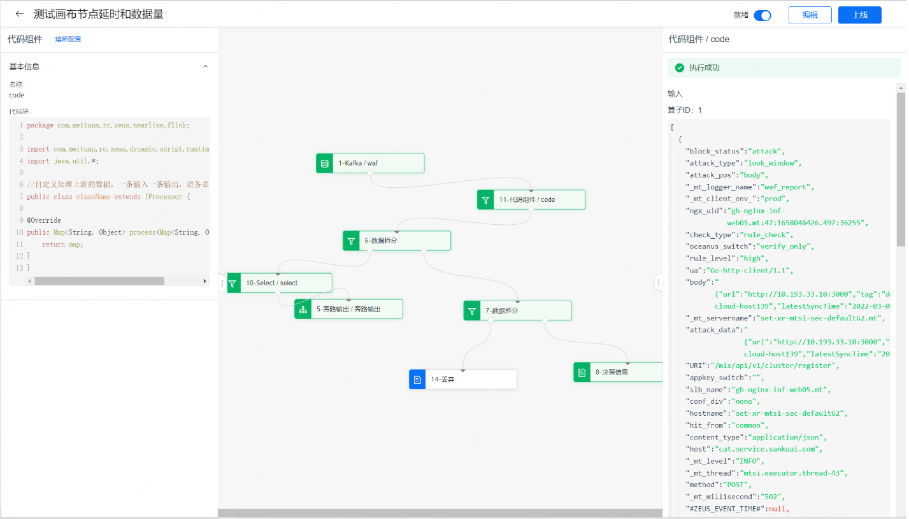

02 快速入门
1 使用流程简介

参考配置：说明：画布- 完整配置指南
2 完整流程说明
2.1 登录Zeus，选择业务空间，点击策略部署-画布，新建画布

2.2 拖拉拽左侧组件，按照策略执行顺序部署可视化策略图

2.3 配置完成，进入仿真测试，输入测试数据

2.4 仿真测试通过，将作业置于就绪态，点击上线


保存日期：2026-11-17 · 查看学城原文
参考配置：说明：画布- 完整配置指南

